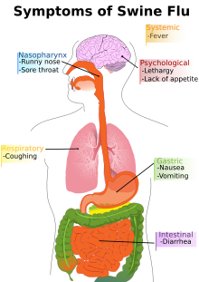

COVID 19 SYSTEM:
THE EFFECTS OF THE 2009 H1N1 PANDEMIC: SWINE FLU
In the Spring of 2009, a novel influenza virus emerged in the United States before it quickly spread to the rest of the world. The virus contained a new combination of influenza genes that the world had never seen before in people or animals. The new strain of Swine Flu, formally known as H1N1 had a combination of bird, swine, and human flu viruses combined with a Eurasian pig flu virus. The virus caused many people to develop pneumonia and acute respiratory distress syndrome (ARDS).
